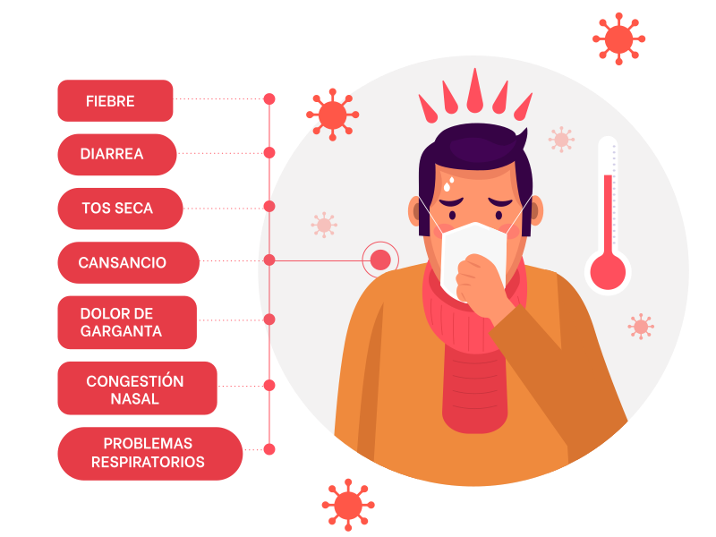

¿Cuáles son los síntomas?
La COVID-19 afecta de distintas maneras en función de cada persona. Los sintomas pueden ser leves, moderados o graves y se presentan en un plazo de 5 a 6 días. Observa los síntomas según su nivel de intensidad:
Fiebre
Tos seca
Cansancio
Molestias y dolores
Dolor de garganta
Diarrea
Conjuntivitis
Dolor de cabeza
Pérdida del olfato/gusto
Dificultad para respirar
Dolor o presión en el pecho
Incapacidad para hablar/moverse
